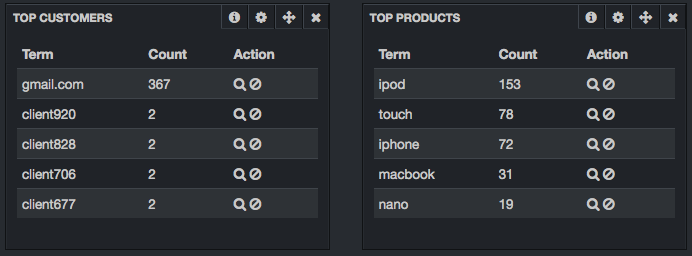
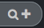
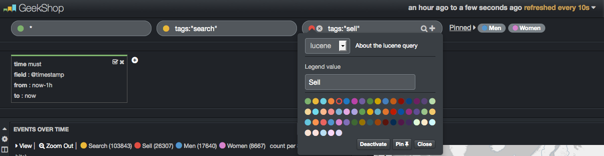
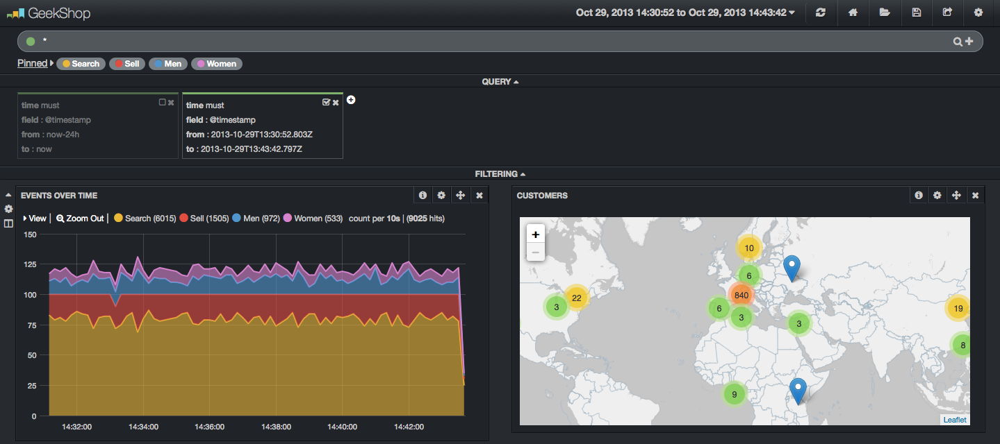
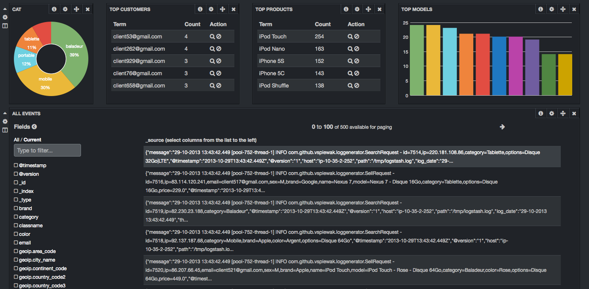
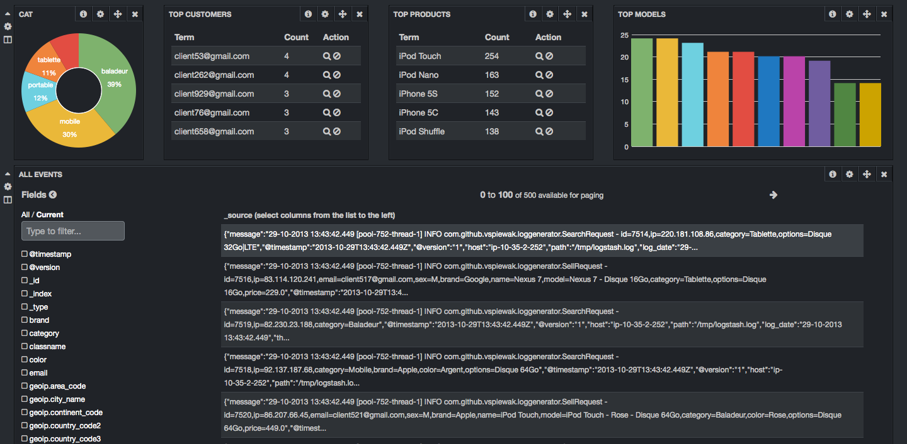

De nouveau, nous pouvons relancer Logstash et lui passer notre ligne de log, cette fois, nous allons avoir un résultat de la forme suivante:
{% highlight bash %} { "message" => "02-10-2013 14:26:27.724 [pool-10-thread-1] INFO com.github.vspiewak.loggenerator.SearchRequest - id=9205,ip=217.109.49.180,cat=TSHIRT", "@timestamp" => "2013-10-27T10:30:32.242Z", "@version" => "1", "host" => "lucid64", "log_date" => "02-10-2013 14:26:27.724", "thread" => "pool-10-thread-1", "log_level" => "INFO", "classname" => "com.github.vspiewak.loggenerator.SearchRequest", "msg" => "id=9205,ip=217.109.49.180,cat=TSHIRT" } {% endhighlight %}Pour alléger la configuration, nous allons extraire l'expression régulière de la date et la définir en tant que pattern:
- créez un dossier "patterns" dans le répertoire courant
- Créez un fichier "logback" dans le dossier "patterns" contenant: {% highlight bash %} LOG_DATE %{MONTHDAY}-%{MONTHNUM}-%{YEAR} %{HOUR}:%{MINUTE}:%{SECOND}.[0-9]{3} {% endhighlight %}
La configuration Losgstash devient: {% highlight bash %} filter { grok { patterns_dir => "./patterns" match => [ "message", "%{LOG_DATE:log_date} \[%{NOTSPACE:thread}\] %{LOGLEVEL:log_level} %{NOTSPACE:classname} - %{GREEDYDATA:msg}"] } } {% endhighlight %}
À ce niveau, nous constatons que l'intégralité du message a été parsé et est maintenant interprété. Par contre, même si nous avons correctement interprété la date du log, le champ @timestamp contient toujours la date de lecture par Logstash. Il serait plus intéressant de mettre dans ce champ la date de log. Pour cela, il va falloir utiliser un autre type de filtre, le filtre date.
Filtre date
Ressources:
Le filtre date est l'un des filtres les plus important. Il permet de préciser quelle date utiliser pour l'événement généré et alimentant le champ @timestamp. Rajoutez le filtre dans le fichier de configuration:
{% highlight bash %}
filter {
[...]
date {
match => ["log_date","dd-MM-YYYY HH:mm:ss.SSS"]
}
}
{% endhighlight %}
En redonnant notre ligne de log en entrée, nous récupérons un retour de la forme suivante: {% highlight bash %} { "message" => "02-10-2013 14:26:27.724 [pool-10-thread-1] INFO com.github.vspiewak.loggenerator.SearchRequest - id=9205,ip=217.109.49.180,cat=TSHIRT", "@timestamp" => "2013-10-02T12:26:27.724Z", "@version" => "1", "host" => "lucid64", "log_date" => "02-10-2013 14:26:27.724", "thread" => "pool-10-thread-1", "log_level" => "INFO", "classname" => "com.github.vspiewak.loggenerator.SearchRequest", "msg" => "id=9205,ip=217.109.49.180,cat=TSHIRT" } {% endhighlight %}
Logstash normalise les dates au format UTC automatiquement.
Filtre kv
Le filtre kv s'avère très utile lorsque vous voulez parser un champ de type foo=bar comme par exemple une requête HTTP. Ajoutez le filtre kv pour notre example: {% highlight bash %} filter { [...] kv { field_split => "," source => "msg" } } {% endhighlight %}
Relancez Logstash et passez lui en entrée la ligne suivante: {% highlight bash %}08-10-2013 16:33:49.629 [pool-1-thread-1] INFO com.github.vspiewak.loggenerator.SearchRequest - id=41,ip=157.55.34.94,brand=Apple,name=iPhone 5C,model=iPhone 5C - Blanc - Disque 16Go,category=Mobile,color=Blanc,options=Disque 16Go,price=599.0{% endhighlight %}
Vous devez obtenir le résultat suivant: {% highlight bash %} { "message" => "08-10-2013 16:33:49.629 [pool-1-thread-1] INFO com.github.vspiewak.loggenerator.SearchRequest - id=41,ip=157.55.34.94,brand=Apple,name=iPhone 5C,model=iPhone 5C - Blanc - Disque 16Go,category=Mobile,color=Blanc,options=Disque 16Go,price=599.0", "@timestamp" => "2013-10-08T14:33:49.629Z", "@version" => "1", "host" => "lucid64", "log_date" => "08-10-2013 16:33:49.629", "thread" => "pool-1-thread-1", "log_level" => "INFO", "classname" => "com.github.vspiewak.loggenerator.SearchRequest", "msg" => "id=41,ip=157.55.34.94,brand=Apple,name=iPhone 5C,model=iPhone 5C - Blanc - Disque 16Go,category=Mobile,color=Blanc,options=Disque 16Go,price=599.0", "id" => "41", "ip" => "157.55.34.94", "brand" => "Apple", "name" => "iPhone 5C", "model" => "iPhone 5C - Blanc - Disque 16Go", "category" => "Mobile", "color" => "Blanc", "options" => "Disque 16Go", "price" => "599.0" } {% endhighlight %} Logstash parse maintenant notre ligne de vente et ajoute automatiquement les champs category, brand, name, model, color, options et price.
Filtre GeoIP
Le filtre geoip permet d'ajouter des informations de géolocalisation via une adresse ip (ou hostname). Logstash utilise la base de donnée GeoCityLite de Maxmind sous license CCA-ShareAlike 3.0.
Nous allons utiliser une version de GeoCity téléchargée au préalable sur le site Maxmind plutôt que la version embarquée dans Logstash. Copiez le fichier ~/tools/GeoLiteCity.dat dans ~/workshop et rajoutez le filtre dans la configuration Logstash: {% highlight bash %} filter { [...] geoip { source => "ip" database => "./GeoLiteCity.dat" } } {% endhighlight %}Filtre mutate
Le filtre mutate est un filtre "couteaux suisses" permettant une multitude de modifications.
Ajout de tag
Nous allons ajouter un tag à nos logs afin de différencier les recherches des ventes: {% highlight bash %} filter { [...] if [classname] =~ /SellRequest/ { mutate { add_tag => "sell" } } else if [classname] =~ /SearchRequest$/ { mutate { add_tag => "search" } } } {% endhighlight %}
Relancez Logstash et passez lui en entrée la ligne suivante: {% highlight bash %} 08-10-2013 16:33:49.629 [pool-1-thread-1] INFO com.github.vspiewak.loggenerator.SearchRequest - id=41,ip=157.55.34.94,brand=Apple,name=iPhone 5C,model=iPhone 5C - Blanc - Disque 16Go,category=Mobile,color=Blanc,options=Disque 16Go,price=599.0 08-10-2013 16:33:49.629 [pool-1-thread-1] INFO com.github.vspiewak.loggenerator.SellRequest - id=41,ip=157.55.34.94,brand=Apple,name=iPhone 5C,model=iPhone 5C - Blanc - Disque 16Go,category=Mobile,color=Blanc,options=Disque 16Go,price=599.0 {% endhighlight %}
Notez au passage que Logstash permet l'utilisation de conditions, pour en savoir plus:
Conversion de type
Le filtre mutate permet de convertir certains champs en entier, flottant ou string. Nous ajoutons à notre configuration la conversion des champs id et price: {% highlight bash %} filter { [...] mutate { convert => [ "id", "integer" ] convert => [ "price", "float" ] } } {% endhighlight %}
Suppression d'un champ
Toujours avec le filtre mutate, nous allons supprimer le champ "msg". Nous avons en effet parsé ce champ avec le filtre kv et n'avons plus besoin de ce doublon d'information. {% highlight bash %} filter { [...] mutate { [...] remove_field => [ "msg" ] } } {% endhighlight %}
Split d'un champ
Pour finir avec le filtre mutate, nous allons splité notre champ "options" afin d'avoir un tableau d'options. {% highlight bash %} filter { [...] mutate { [...] split => [ "options", "|" ] } } {% endhighlight %}
GeoIP et Bettermap
Le panel Bettermap de Kibana requiert un champ contenant les coordonnées GPS au format Geo_JSON (i.e: un tableau de deux float au format: [ longitude, latitude ]).
Ajoutez un champ "geoip.lnglat" contenant le tableau de coordonnées via le "hack" suivant: {% highlight bash %} filter { [...] # geoip.lnglat contiendra le point geo_json, 'tmplat' contient la latitude (temporaire) # les deux champs sont de type string. mutate { add_field => [ "[geoip][lnglat]", "%{[geoip][longitude]}", "tmplat", "%{[geoip][latitude]}" ] } # merge du champ tmplat dans geoip.lnglat. # le champ geoip.lnglat devient un tableau de string mutate { merge => [ "[geoip][lnglat]", "tmplat" ] } # conversion du tableau de string en float # suppression du champ tmplat mutate { convert => [ "[geoip][lnglat]", "float" ] remove_field => [ "tmplat" ] } } {% endhighlight %}
Résultat final
{% highlight bash %} input { stdin { } } filter { grok { patterns_dir => "./patterns" match => ["message","%{LOG_DATE:log_date} \[%{NOTSPACE:thread}\] %{LOGLEVEL:log_level} %{NOTSPACE:classname} - %{GREEDYDATA:msg}"] } date { #timezone => "UTC" match => ["log_date","dd-MM-YYYY HH:mm:ss.SSS"] } kv { field_split => "," source => "msg" } geoip { source => "ip" database => "./GeoLiteCity.dat" } if [classname] =~ /SellRequest/ { mutate { add_tag => "sell" } } else if [classname] =~ /SearchRequest$/ { mutate { add_tag => "search" } } mutate { convert => [ "id", "integer" ] convert => [ "price", "float" ] remove_field => [ "msg" ] split => [ "options", "|" ] } # hack pour Bettermap panel de Kibana mutate { add_field => [ "[geoip][lnglat]", "%{[geoip][longitude]}", "tmplat", "%{[geoip][latitude]}" ] } mutate { merge => [ "[geoip][lnglat]", "tmplat" ] } mutate { convert => [ "[geoip][lnglat]", "float" ] remove_field => [ "tmplat" ] } } output { stdout { debug => true } } {% endhighlight %}Lancer la génération de log
Maintenant que Logstash est capable d'analyser nos logs, nous allons lancer notre générateur.
Création du dossier contenant les futurs logs
{% highlight bash %} $ mkdir /tmp/logstash {% endhighlight %}
Modifier l'entrée de Logstash
Afin que Logstash analyse tous les fichiers de log contenu dans le dossier précédemment créé. {% highlight bash %} input { file { path => "/tmp/logstash/*.log" } } {% endhighlight %}
Lancez le générateur de log
- Copiez le jar ~/tools/log-generator.jar dans le dossier ~/workshop
- Lancer le générateur afin de générer 10 lignes de log chaque seconde dans le fichier /tmp/logstash/workshop.log
ElasticSearch
Maintenant que Logstash est configuré pour parser nos logs et les transformer dans un format convenable, nous allons stocker ces logs dans ElasticSearch.
Configuration d'ElasticSearch
Connectez vous à la vm {{page.groupId}}-1-kibana.aws.xebiatechevent.info et effectuez les opérations suivantes : {% highlight bash %} $ ssh -i kibana.pem ubuntu@{{page.groupId}}-1-kibana.aws.xebiatechevent.info {% endhighlight %}
- créez un répertoire workshop
- copiez dans ce répertoire l'archive d'ElasticSearch présente dans le répertoire ~/tools
Template de mapping ElasticSearch pour les index Logstash
Lancez ElasticSearch après avoir installé le plugin head: {% highlight bash %} $ ~/workshop/elasticsearch-0.90.5/bin/plugin -install mobz/elasticsearch-head $ ~/workshop/elasticsearch-0.90.5/bin/elasticsearch {% endhighlight %}
Une fois elasticsearch lancé, vous pouvez visualiser facilement votre cluster Elasticsearch via l'url: http://{{page.groupId}}-1-kibana.aws.xebiatechevent.info:9200/_plugin/head
Ajoutez le template suivante afin d'utiliser l'analyser "keyword" pour les champs "ip", name", "model", "options" et "email": {% highlight bash %} curl -XPUT http://localhost:9200/_template/logstash_per_index -d '{ "template" : "logstash*", "mappings" : { "_default_" : { "_all" : {"enabled" : false}, "properties" : { "@timestamp": { "type": "date", "index": "not_analyzed" }, "tags": { "type": "string", "index": "not_analyzed" }, "ip": { "type" : "ip", "analyzer": "keyword", "index": "analyzed" }, "name": { "type" : "string", "analyzer": "keyword", "index": "analyzed" }, "model": { "type" : "string", "analyzer": "keyword", "index": "analyzed" }, "options": { "type" : "string", "analyzer": "keyword", "index": "analyzed" }, "email": { "type" : "string", "analyzer": "keyword", "index": "analyzed" } } } } } ' {% endhighlight %}
Ce mapping vous permettra de ne pas avoir décueils lors de la construction de votre dashboard Kibana. 
Branchement de Logstash avec ElasticSearch
ElasticSearch est maintenant configuré. Nous allons donc configurer Logstash pour qu'il envoit les logs analysés dans le moteur de recherche.
Modification de la sortie de Logstash: {% highlight bash %} output { elasticsearch { host => "{{page.groupId}}-1-kibana.aws.xebiatechevent.info" } } {% endhighlight %}
C'est tout ce qu'il y a à faire. Vous pouvez maintenant redémarrer Logstash et pour vérifier qu'ElasticSearch est bien alimenté, retourner sur la vm d'ElasticSearch et lancez les deux commandes suivantes.
Pour lister les index: {% highlight bash %} $ curl -s http://127.0.0.1:9200/_status?pretty=true | grep logstash {% endhighlight %}
Pour voir le nombre de documents indexés: {% highlight bash %} $ curl -gs -XGET "http://localhost:9200/logstash-*/_count" {% endhighlight %}
Kibana
Installation
Installation de Kibana dans Apache: {% highlight bash %} cd /var/www sudo unzip /home/ubuntu/tools/kibana-latest.zip sudo mv kibana-latest kibana sudo /etc/init.d/apache2 restart {% endhighlight %}
Vous devriez pouvoir acceder au dashboard via l'url: {{page.groupId}}-1-kibana.aws.xebiatechevent.info/kibana
Dashboard Logstash
Kibana vous propose un dashboard pré-configuré si vos données viennent de Logstash/ES. Vous pouvez y acceder via l'url: {{page.groupId}}-1-kibana.aws.xebiatechevent.info/kibana/index.html#/dashboard/file/logstash.json.
Dashboard GeekShop
Nous allons créer un dashboard personnalisé pour notre boutique en ligne. Commencez avec un dashboard vide accessible à l'adresse: {{page.groupId}}-1-kibana.aws.xebiatechevent.info/kibana/index.html#/dashboard/file/blank.json. N'oubliez pas de sauvegarder régulièrement votre dashboard dans Elasticsearch grâce au menu situé en haut à droite.
Configuration générale
Cliquez sur la roue crantée tout en haut à droite afin de faire apparaître le menu "Dashboard Settings":
- dans l'onglet "General", changez le titre du dashboard
- dans l'onglet "Index", selectionnez "day", puis entrez "[logstash-]YYYY.MM.DD" dans le champ index pattern
- dans l'onglet "Rows", ajouter les lignes "timeline", "hits", "search", "sell", "events" en cliquant sur "Create Row"
Configuration des queries
Ajoutez des barres de recherches en cliquant sur l'icône "+". 
Entrez les queries suivantes:
- tags:"search"
- tags:"sell"
- sex:"M"
- sex:"F"
- search
- sell
- men
- women Puis épinglez les queries via le bouton "Pin".
- Ajoutez un panel "histogram" dans la première ligne. Configurez la taille à 6.
- Ajoutez un panel "bettermap" toujours dans la première ligne. Configurez la taille à 6. Insérez "geoip.lnglat" pour le champ "Coordinate Field".
- Ajoutez un panel "pie" de taille 2. Selectionnez le mode "goal". Sélectionnez la query "search" (queries => selected).
- Ajoutez un panel "pie" de taille 2. Selectionnez le mode "goal". Sélectionnez la query "sell".
- Ajoutez un panel "hits" de taille 2. Selectionnez le style "pie". Sélectionnez les queries "search" et "sell".
- Ajoutez un panel "hits" de taille 2. Selectionnez le style "pie". Sélectionnez les queries "men" et "women".
- Ajoutez un panel "hits" de taille 4. Selectionnez le style "bar". Sélectionnez les queries "search", "sell", "men" et "women".
- Ajoutez un panel "terms" de taille 2. Insérez "category" dans le champ "Field". Selectionnez le style "pie". Sélectionnez la query "search".
- Ajoutez un panel "terms" de taille 3. Insérez "options" dans le champ "Field". Selectionnez le style "table". Sélectionnez la query "search".
- Ajoutez un panel "terms" de taille 3. Insérez "geoip.ip" dans le champ "Field". Selectionnez le style "table". Sélectionnez la query "search".
- Ajoutez un panel "terms" de taille 4. Insérez "name" dans le champ "Field". Selectionnez le style "bar". Sélectionnez la query "search".
- Ajoutez un panel "terms" de taille 2. Insérez "category" dans le champ "Field". Selectionnez le style "pie". Sélectionnez la query "sell".
- Ajoutez un panel "terms" de taille 3. Insérez "email" dans le champ "Field". Selectionnez le style "table". Sélectionnez la query "sell".
- Ajoutez un panel "terms" de taille 3. Insérez "name" dans le champ "Field". Selectionnez le style "table". Sélectionnez la query "sell".
- Ajoutez un panel "terms" de taille 4. Insérez "model" dans le champ "Field". Selectionnez le style "bar". Sélectionnez la query "sell".
Donnez un alias aux queries (en cliquant sur le rond de couleur):
Pour finir, choisissez un période de temps pour le dashboard en cliquant sur "set at time filter". Sélectionnez "Last 1h" puis "Auto-Refresh" > "every 30s". 
Ligne Timeline
Ligne Hits
Ligne Search
(Précision: veillez à décocher "missing" et "others" dans la configuration de tous les panels suivants)
Ligne Sell
(Précision: veillez à décocher "missing" et "others" dans la configuration de tous les panels suivants)
Ligne Events
Ajoutez un panel de type "table" de taille 2. Sélectionnez la query "courante" "*"
Conclusion
Vous devez obtenir un dashboard similaire à celui-ci:
 
